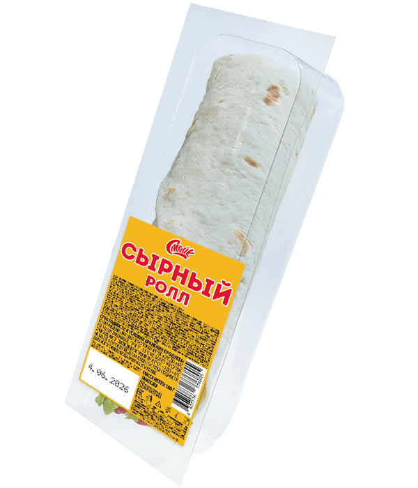

Ролл сырный

Состав:
лаваш, куриное филе, капуста пекинская, помидор, огурец, соус сырный.
Масса:
180 г.
Пищевая и энергетическая ценность в 100 г продукта (средние значения):
Белки
– 9,6 г.
Жиры
– 5,4 г.
Углеводы
– 20,8 г.
Калорийность
– 185 ккал / 780 кДж.
Закрыть окно